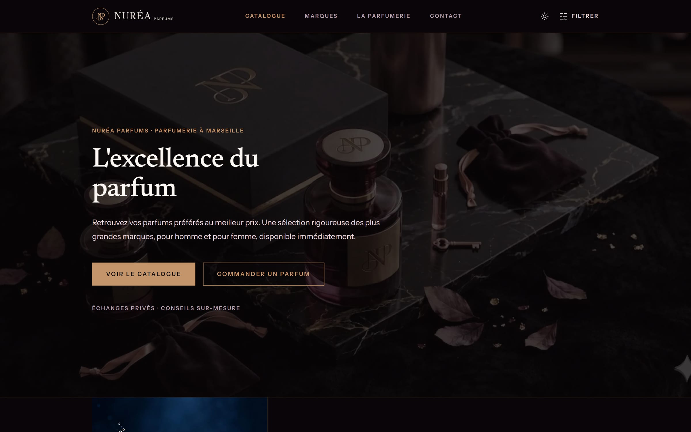
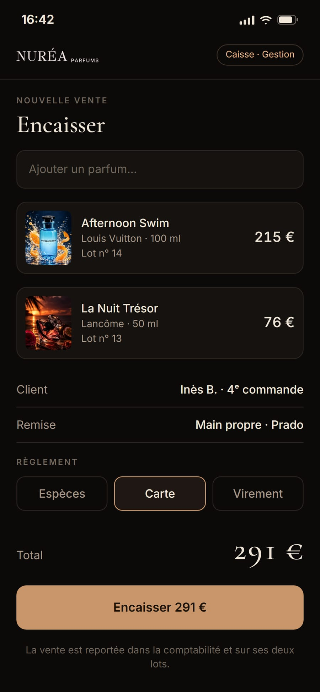
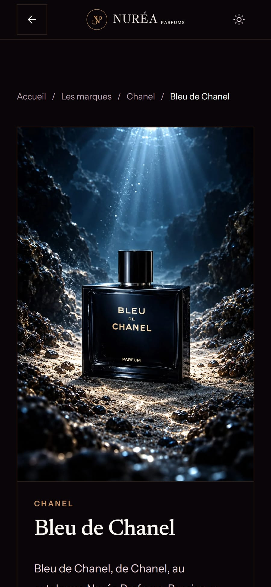
Un catalogue de plus de cent parfums à la hauteur des maisons représentées, et derrière, la caisse, les lots d’achat et la comptabilité.
Livré Site catalogue, back-office, caisse mobile, comptabilité.
Réalisations
Une parfumerie, un snack de skatepark, une pâtisserie, une conciergerie. Chaque fois, la vitrine et ce qu’il y a derrière : la caisse, la cuisine, les marges, les demandes.



Un catalogue de plus de cent parfums à la hauteur des maisons représentées, et derrière, la caisse, les lots d’achat et la comptabilité.
Livré Site catalogue, back-office, caisse mobile, comptabilité.
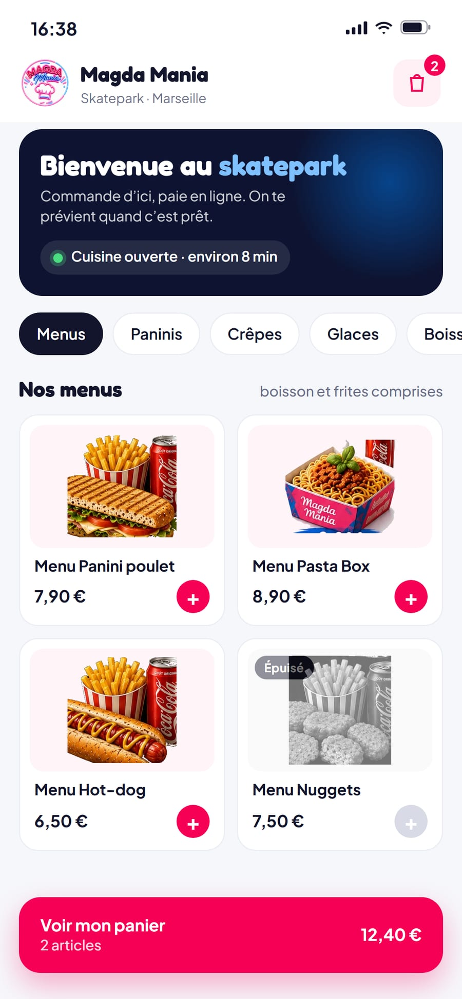
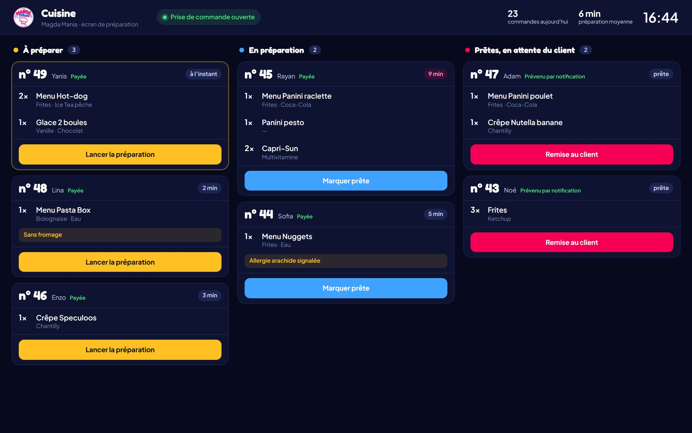
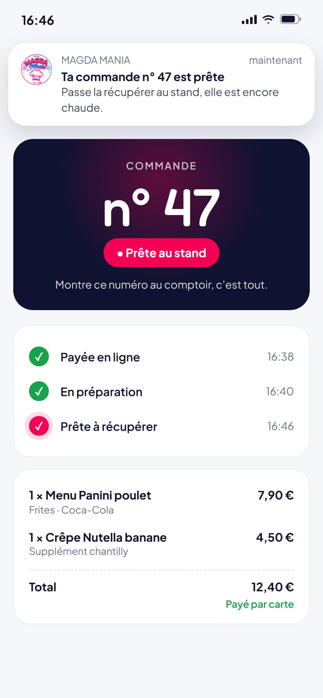
Commande et paiement depuis le téléphone, écran de préparation en cuisine, et une notification quand c’est prêt.
Livré Click & collect, paiement en ligne, écran cuisine, espace gérant.
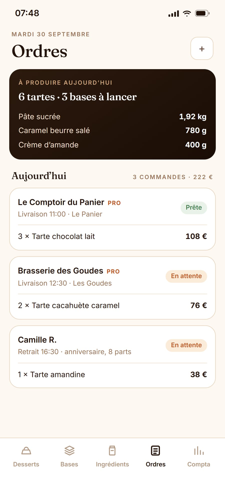
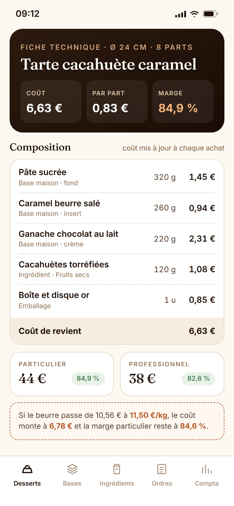
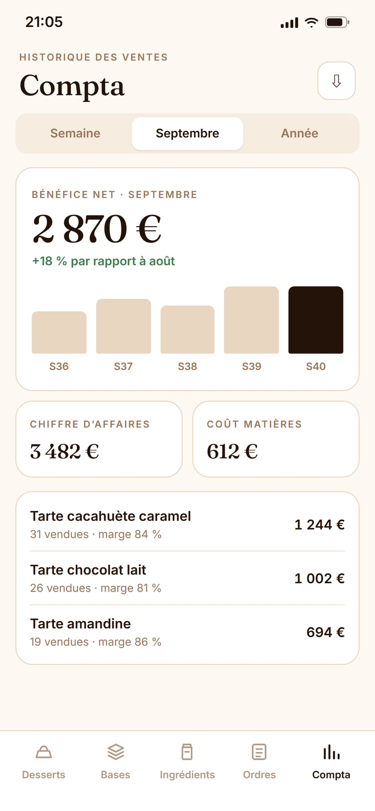
Le coût de revient de chaque tarte, les commandes des particuliers et des restaurants, la comptabilité : toute la pâtisserie tient dans un téléphone.
Livré Fiches techniques, coût de revient, commandes, comptabilité.
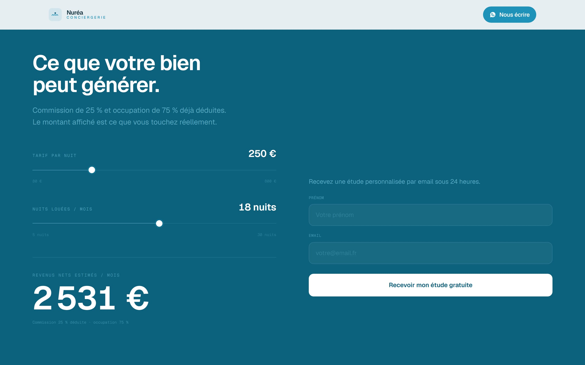
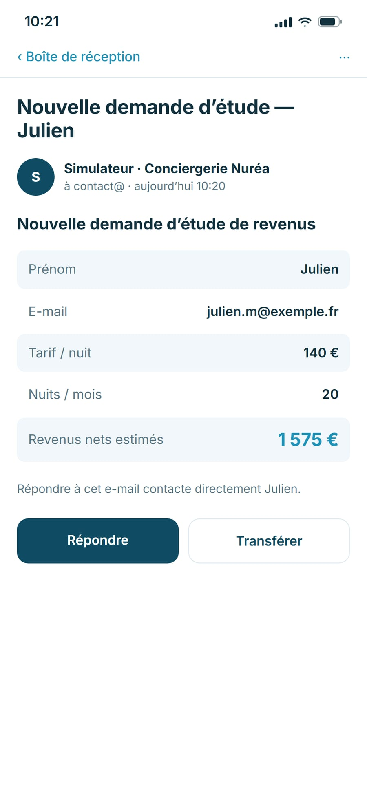
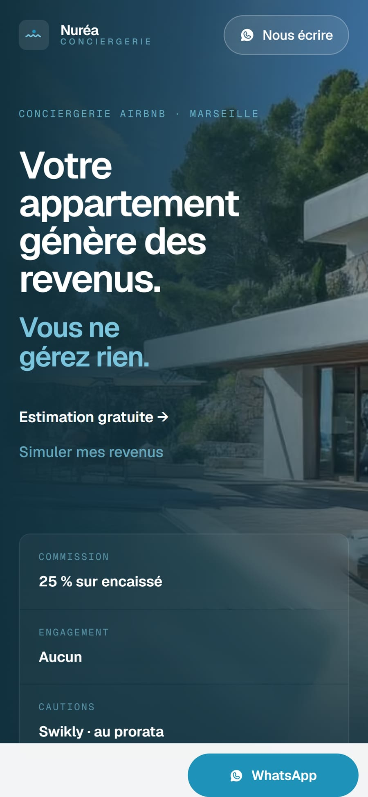
Un site qui répond aux questions d’un propriétaire avant le premier appel, et un simulateur qui transforme la visite en demande chiffrée.
Livré Site vitrine, simulateur de revenus, demandes par e-mail, contact WhatsApp.
Les écrans de gestion sont présentés avec des données d’exemple : les chiffres de nos clients restent chez eux.
Un catalogue de plus de cent parfums à la hauteur des maisons représentées, et derrière, la caisse, les lots d’achat et la comptabilité.
Nuréa Parfums vend à Marseille des parfums de grandes maisons, pour homme et pour femme. Les commandes se passent en direct, par message, et les flacons sont remis en main propre ou envoyés.
Vendre par messages fonctionne tant que le catalogue tient dans une conversation. Au-delà de cent références, un client ne peut plus parcourir l’offre seul, et chaque question sur un parfum devient un échange de plus.
Côté gestion, le même canal ne dit rien de ce qui a été vendu, encaissé ou dépensé : il fallait un outil pour tenir les chiffres de l’activité, pas seulement une vitrine.
Un site catalogue qui présente toute l’offre, par marque et par parfum, avec une fiche par référence et un bouton de commande qui nomme déjà le parfum voulu.
Derrière, un espace de gestion privé, installable sur téléphone, qui suit l’activité de bout en bout : le client, la vente, le lot d’achat auquel elle se rattache, l’encaissement, et la comptabilité qui en découle.
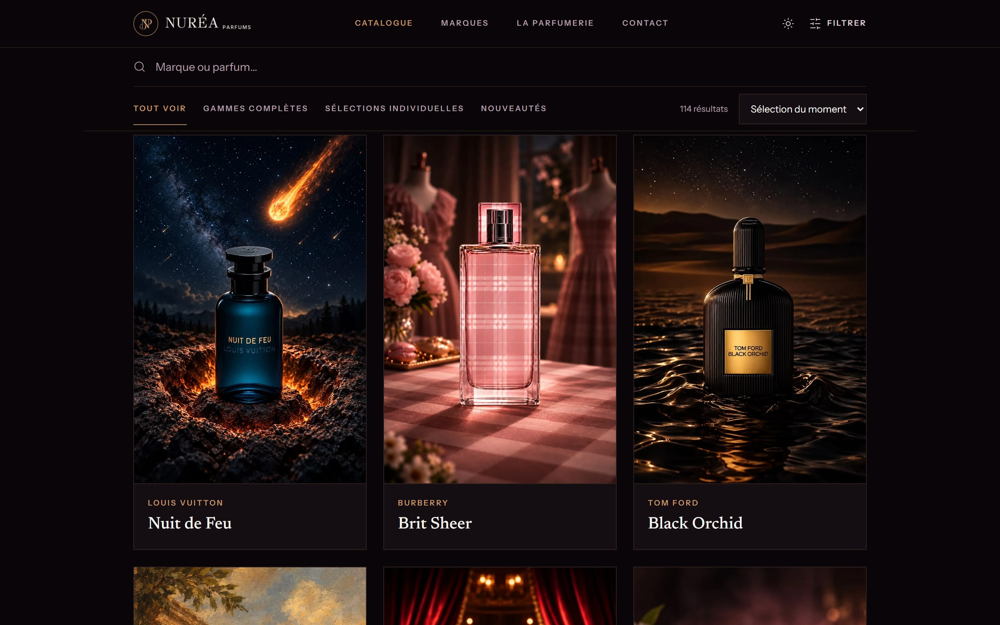
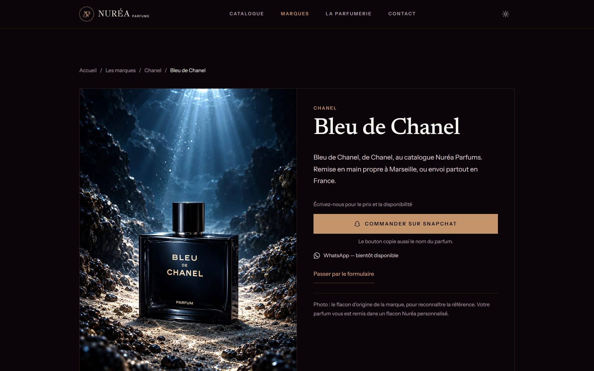
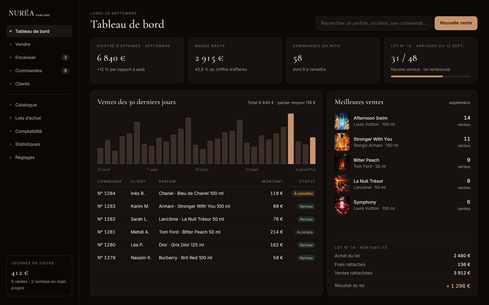
Construit avec Next.js, PostgreSQL, Prisma. Application installable.